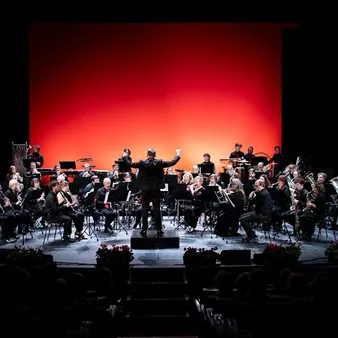

mer 11 nov · dalle 20:45
La Divina Commedia in Concerto
Si alza il sipario sulla nuova Stagione Teatrale del Teatro Comunale di Monfalcone, dal titolo "Nuove forme"! Ad anticipare il primo appuntamento ufficiale in calendario, che vedrà protagonisti Ray Gelato&The Giants, lo spettacolo fuori abbonamento "La Divina Commedia in…
 Indicazioni
Indicazioni
- Costi e prenotazioni
- Costo non indicato · Prenotazione non indicata
- Programma
- Programma da verificare. Apri la fonte ufficiale per orari e possibili aggiornamenti.
- In caso di maltempo
- Nessuna indicazione specifica pubblicata.
- Note
- Acquisito automaticamente dalla fonte.
L’EVENTO
Descrizione completa
Si alza il sipario sulla nuova Stagione Teatrale del Teatro Comunale di Monfalcone, dal titolo "Nuove forme"!
Ad anticipare il primo appuntamento in calendario, che avrà per protagonisti Ray Gelato&The Giants, il teatro invita tutto il pubblico al fuori abbonamento "La Divina Commedia in Concerto", previsto per mercoledì 11 novembre, alle ore 20.45.
Un concerto a cura dell'Orchestra di Fiati Arcobaleno di Trieste, che accompagnerà lo spettatore in un viaggio musicale ed emozionale tra l'Inferno, il Purgatorio e il Paradiso di Dante Alighieri. Nell'Inferno, la scrittura musicale assume toni cupi e drammatici, che riproducono i luoghi tetri, le anime malvagie e le spaventose pene a cui sono sottoposte per l'eternità. Nel secondo movimento, la musica è legata al peccato e all’attaccamento delle anime che abitano il monte del Purgatorio, mentre il terzo e ultimo, nel quale Dante riesce ad uscire dal Purgatorio e ad arrivare in Paradiso seguendo le stelle, è pervaso da un sentimento di pace, serenità e speranza, rappresentato da musiche armoniose e dolci melodie.
Direttore: Erik Žerjal
Musiche di Robert W. Smith
Voce narrante: Gianni Pellegrini
Produzione: Orchestra di Fiati Arcobaleno.
Lo spettacolo, realizzato in collaborazione con ERT FVG, rientra tra le innumerevoli iniziative della rassegna "La forza dei legami", dedicata al 50° anniversario del terremoto in Friuli.
Per ringraziare del profondo affetto e grande entusiasmo con cui il pubblico monfalconese da sempre accoglie la proposta culturale del Teatro Comunale, l'ingresso allo spettacolo è del tutto gratuito per gli abbonati, mentre prevede una tariffa speciale per i non abbonati.
Acquisto biglietti
Biglietteria del Teatro: da lunedì a sabato 17:00-19.00 o giorno dello spettacolo fino a ora d'inizio.
Biblioteca Comunale di Monfalcone: da lunedì a venerdì 9.00-20.00, sabato 9.00-13.00.
Online: sui siti ERTFVG e www.vivaticket.it
Prenotazioni
Biglietteria del Teatro: tel. 0481 494664 | e-mail: biglietteria.teatro@comune.monfalcone.go.it
Informazioni
Ufficio Teatro: tel. 0481 494369 | e-mail: teatro@comune.monfalcone.go.it
IL PROGRAMMA
Programma e orari
Appuntamenti raccolti dalle fonti elencate. Dove manca un orario, non è ancora disponibile in questa scheda.
Programma pubblicato
- Dal 2026-11-11 al 2026-11-11
INFORMAZIONI UTILI
Prima di partire
- Controllare la fonte prima di partire.
ORGANIZZAZIONE